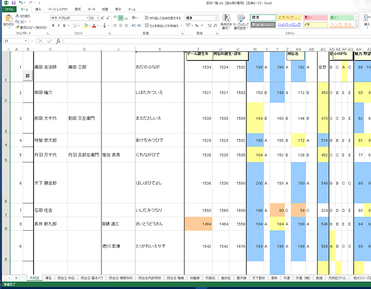

<div class="content-box mb-3 content-lighten">
    <h2><i class="fa fa-file-excel-o fa-fw"></i>武将一覧EXCEL</font>
    </h2>
</div>
<div class="content-box mb-3 content-lighten">
        <h3>概要</h3>
        <p>天翔記に登場する武将に関して、「天翔記」～「創造」までの関連データを照合・収集したEXCELデータとなります。<br>
        </p>
</div>
<div class="content-box mb-3 content-lighten">
    <h3>ダウンロード</h3>

    <div class="card mb-3 ml-3" style="max-width: 30rem;">
        <!-- カード本文：card-body -->
        <div class="card-body text-center">
            <div class="row">
                <div class="col-12"><small>更新日 %(year)04d/%(mon)02d/%(mday)02d</small></div>
            </div>
            <a href="%(file)s" class="btn btn-primary"><i class="fa fa-download fa-fw"></i>武将一覧.xls (EXCEL)</a>
        </div>
    </div>
</div>
<div class="content-box mb-3 content-lighten">
    <h3>内容補足</h3>
    <ul>
        <li>顔グラを他の信長の野望シリーズから大量に流用するためには、<br>
            武将名の参照一致を使ったオート変換が欠かせません。<br>
        <li>このExcelファイルはそのような事をご自身でもやりやすくすべく、<br>
            1300人の武将･姫の名前が｢顔ID順｣に列挙されています。<br>
        <li>又、天翔記はもちろん、<br>
            該当人物の他シリーズでの別名(改名等)も併記することで、<br>
            同一人物時で不一致となることを防止可能としています。<br>
        <li>なお、｢武田信豊｣｢河野通直｣｢酒井忠勝｣に関しては、<br>
            それぞれ２人ずつ存在するため、 注意を払う必要があります。<br>
        <li>｢kao_24bit｣ディレクトリ内に本Excelを置き、｢Excelのマクロを有効｣にして、｢顔｣ボタンを押せば、顔の一覧を武将データに合わせてExcel内に読み込みます。<br><br>
            
    </ul>
</div>
<div class="content-box mb-3 content-lighten">
       <h3>他の武将一覧</h3>
        <ol>
            <a href="http://hima.que.ne.jp/nobu/bushou/tenshouki.shtml">火間虫入道サイトの『信長の野望　天翔記』武将総覧</a><br>
            でも検索や閲覧が可能です。
        </ol>
    </li>
</div>